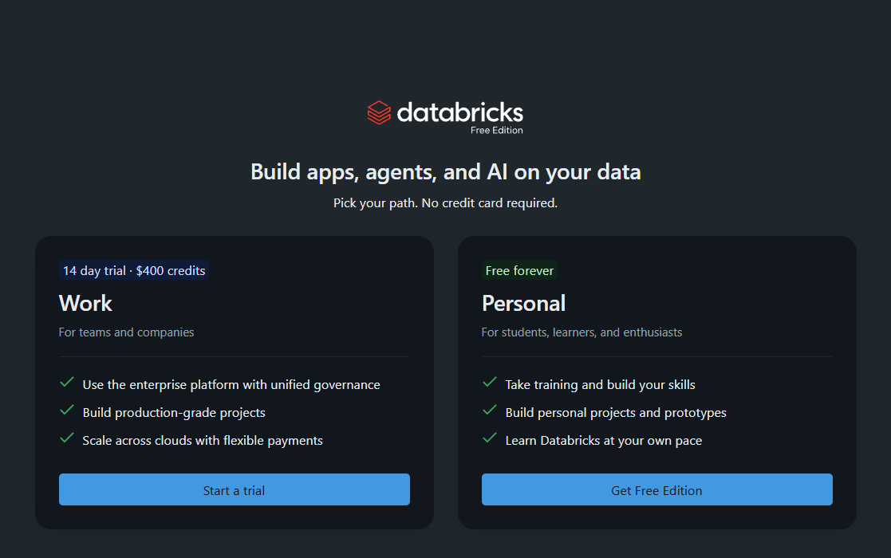
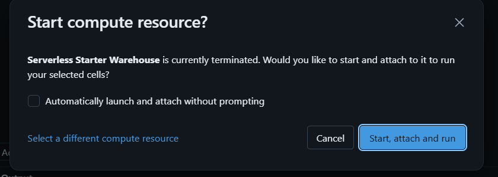

Trilha Engenheiro de Dados Pleno · Aula 1 de 4 · 11/11
Da API ao Lakehouse, no Databricks, sem pagar nada
Você já sabe ler um arquivo, limpar e agregar. Agora vai fazer isso do jeito que as vagas de pleno cobram: dado vindo de uma API de verdade, camadas Bronze, Silver e Gold em Delta Lake, governança no Unity Catalog e um Job que roda sozinho todo dia. Tudo no Databricks Free Edition, sem cartão de crédito.
Fonte
USGS · API FDSN
Recorte
2025 · magnitude ≥ 2,5
Registros
29.265 eventos
Entrega
Job agendado
00 · O destino
O que vamos construir
O USGS, o serviço geológico dos Estados Unidos, publica todo terremoto registrado no planeta numa API pública, sem chave, no padrão internacional FDSN. É um dado vivo: um evento entra minutos depois de acontecer, como estimativa automática, e é revisado durante semanas ou meses. Já a magnitude, a localização e a profundidade mudam depois que um sismólogo confere. Um terremoto de 2025 foi revisado ontem.
A pergunta de negócio é de uma resseguradora: onde o chão treme, com que força, com que frequência, e quanto a primeira estimativa erra. No fim das quatro aulas, 2025 inteiro estará num lakehouse governado, atualizado todo dia por um Job, com tabelas Gold prontas para qualquer ferramenta de análise consumir. Primeiro a planta:
Tudo isso roda na nuvem do Databricks, em computação serverless: não existe cluster para criar nem máquina para ligar. O catálogo sismos é o equivalente ao arquivo .duckdb do curso iniciante, só que governado. Cada seta é um notebook seu, e cada um pode ser rodado de novo, do zero, sem duplicar nada.
Lido de cima para baixo, o mesmo caminho com o que cada camada entrega:
APIUSGS: 12 respostas GeoJSON, uma por mês de 2025.
↓01_extract · Python pergunta quantos são, baixa e confere
landing/Arquivos num volume. Se o USGS revisar amanhã, você ainda tem o que ele disse hoje.
↓02_bronze · Auto Loader lê só o arquivo novo e grava em Delta
bronzeEspelho fiel da resposta, agora consultável em SQL, com colunas de auditoria.
↓03_silver · PySpark explode, tipa e faz MERGE pela versão mais nova
silverDado confiável e ainda granular: 1 linha = 1 evento.
↓04_gold · SQL agrega e responde perguntas
goldPronto para consumo: eventos por região, faixas de magnitude, risco por país.
Quatro notebooks, três camadas e uma regra que vale para todas: qualquer notebook pode ser rodado de novo sem duplicar dado. No curso iniciante isso se resolvia apagando e recriando a tabela. Aqui não dá, porque a Bronze guarda histórico e a fonte muda. Aprender a ser idempotente sem apagar nada é o salto de júnior para pleno.
01 · De onde viemos
A evolução da engenharia de dados
Um disquete de 3,5 polegadas, o padrão do fim dos anos 1980, guardava 1,44 MB. Para guardar 1 GB, eram quase 700 disquetes. Para 1 TB, que hoje cabe num pen drive, quase 700 mil, uma pilha de uns 2 km de altura. Os 12 arquivos que a turma vai baixar do USGS na aula 2 ocupam 21 MB: 15 disquetes.
Parece curiosidade, mas é a história inteira da engenharia de dados. Quase toda decisão de arquitetura das últimas quatro décadas foi uma resposta ao preço de guardar um byte. Quando guardar era caro, a regra era jogar fora. Quando ficou barato, a regra virou guardar tudo.
Custo aproximado de 1 GB em disco rígido, em dólares da época. A escala é logarítmica: cada linha da grade é 100 vezes mais barata que a de cima. Em quarenta anos, o preço caiu cerca de dez milhões de vezes. Valores em ordem de grandeza, a partir da série histórica de preços de disco compilada por John C. McCallum.
Ver os números em tabela
Ano
1 GB custava (aprox.)
Para comparar
1981
US$ 300.000
Mais que um apartamento
1990
US$ 9.000
Um carro popular
2000
US$ 10
Um almoço
2010
US$ 0,10
Uma bala
2020
US$ 0,02
Quase nada
Quatro eras, uma pergunta: quanto custa guardar?
90anos 1990
Data warehouse
Disco caro e servidor caro, comprados juntos e dimensionados para o pico. Então só entrava no banco o que já estava limpo e resumido: o dado era transformado antes de ser carregado (ETL), e o bruto era descartado. O schema era decidido antes de o dado chegar (schema-on-write), e a modelagem dimensional de Kimball, com fatos e dimensões, nasceu para tirar o máximo de cada byte. Funcionava muito bem para BI. Para uma pergunta nova que precisasse do dado descartado, não tinha volta.
062006 a 2015
Big data e data lake
O Google mostra como processar em centenas de máquinas baratas (MapReduce), surge o Hadoop, e a Amazon lança o S3. Disco virou commodity, e a regra se inverte: guarde tudo, bruto, e decida depois (schema-on-read). Nasce o data lake. O problema: arquivo solto não tem transação nem schema garantido, e muitos lakes viraram pântanos, com terabytes que ninguém sabia o que eram nem se estavam certos.
122012 em diante
Warehouse na nuvem
Redshift, BigQuery e Snowflake separam armazenamento de computação: o dado fica num storage barato, e a máquina liga só para processar. Como carregar ficou barato, o ETL vira ELT: carrega bruto primeiro e transforma lá dentro, com SQL. O dado bruto passa a ser guardado, mas num formato fechado, de um fornecedor só.
192019 em diante
Lakehouse
Formatos abertos de tabela, como Delta Lake (aberto pela Databricks em 2019) e Apache Iceberg, colocam as garantias de um warehouse (transação, schema, histórico) direto sobre os arquivos baratos do lake. Um dado só, num formato aberto, servindo BI, engenharia e ciência de dados. É onde este curso acontece.
Quando guardar era caro
ETL
Extract · Transform · Load
extrai → transforma → carrega o bruto vai para o lixo
Cada byte guardado precisava se justificar. Histórico era luxo, e reprocessar do zero era impossível, porque a origem já tinha sido descartada.
Quando guardar ficou barato
ELT
Extract · Load · Transform
extrai → guarda bruto → transforma em camadas, quantas vezes precisar
O bruto vira patrimônio: dá para reprocessar quando a regra muda, auditar o que a fonte disse e responder perguntas que ninguém tinha pensado.
Repare no curso inteiro por essa lente. A landing guarda a resposta da API como veio. A Bronze guarda de novo, como tabela. O Delta guarda cada versão de cada tabela. Em 1990, isso seria desperdício indefensável: os 21 MB da landing custariam uns 200 dólares de disco. Hoje custam uma fração de centavo. Arquitetura medalhão não é moda. É o que faz sentido quando guardar ficou dez milhões de vezes mais barato.
02 · A plataforma
O que é o Databricks
O Databricks é uma plataforma de dados na nuvem construída em volta do Apache Spark, o motor de processamento distribuído que os próprios fundadores criaram em Berkeley. Hoje ele é bem mais que Spark: armazenamento em formato de tabela (Delta Lake), catálogo e permissões (Unity Catalog), orquestração (Jobs), SQL para analista (SQL warehouse), dashboards e assistentes de IA. Tudo num lugar só, que é o argumento de venda e o motivo de ele aparecer em tantas vagas.
A ideia central que separa o Databricks de um banco de dados tradicional: o armazenamento e o processamento são coisas separadas.
Três tipos de computação, um dado só. Desligar o notebook não apaga nada, e o analista no SQL editor lê exatamente a mesma tabela que o seu notebook acabou de escrever. Entre os dois, o Unity Catalog decide quem pode ver o quê.
No Free Edition você nem escolhe a máquina: a computação é serverless. Você roda uma célula, o Databricks liga o que for preciso e cobra (aqui, da sua cota grátis) só pelo tempo de uso. Nas empresas ainda existem clusters configurados à mão, mas a direção do mercado é essa.
O workspace, em cinco lugares
Na barra lateral
Para que serve no curso
Workspace
Pastas com os seus notebooks. É o "explorador de arquivos" do código.
Catalog
O Catalog Explorer: catálogos, schemas, tabelas e volumes, com abas de amostra, histórico, linhagem e permissões.
SQL Editor
Consultas SQL soltas, rodando no SQL warehouse. O lugar de conferir dado.
Jobs & Pipelines
Onde os notebooks viram um pipeline agendado, na aula 4.
Aparece uma tela com duas opções lado a lado. Escolha a da direita, Personal (com a etiqueta verde Free forever), e clique em Get Free Edition.
Escolha como entrar. Recomendação do curso: use a sua conta Google (botão Sign in with Google). O Databricks cria um workspace só seu em alguns segundos.
Por que Google, e não Microsoft ou e-mail. Na experiência com as turmas, contas criadas com Google conseguiram acessar mais sites externos de dentro do Databricks do que as criadas com Microsoft. Isso pesa na aula 2, quando o notebook vai buscar dados numa API na internet. Se você não tem conta Google, pode usar outra opção: o teste do fim da aula vai mostrar se a sua conta tem acesso, e o plano B resolve se não tiver.

Não clique em Start a trial. A opção da esquerda, Work, é um teste de 14 dias para empresas: depois desse prazo ele acaba e pede pagamento, provavelmente no meio do curso. O curso inteiro roda no Personal · Free Edition, que não expira e não pede cartão.
Free Edition não é Community Edition. A Community Edition foi aposentada em 2025, e tutorial antigo que fala em "criar cluster" é dela. No Free Edition não existe cluster para criar: a computação é toda serverless e aparece sozinha quando você roda uma célula.
Use uma conta pessoal e não a do trabalho: o Free Edition é para estudo, sem uso comercial, e o workspace é seu mesmo depois do curso. Conta que fica muito tempo parada pode ser removida pelo Databricks, então vale entrar de vez em quando.
Confira
Na barra lateral esquerda aparecem, entre outros, Workspace, Catalog, Jobs & Pipelines e SQL Editor. Clique em Catalog: já existe um catálogo chamado workspace. Ele é seu, mas no curso vamos criar o nosso.
03 · A arquitetura
Lakehouse e Delta Lake
Você viu a história: durante anos, empresa de dados teve que escolher entre o warehouse e o lake, e quase sempre acabava pagando pelos dois. Lado a lado:
Data warehouse
Data lake
Lakehouse
Guarda
Tabelas, em formato fechado
Arquivos soltos (CSV, JSON, Parquet)
Arquivos abertos com uma camada de tabela por cima
O que transforma um lake em lakehouse é o formato de tabela. No Databricks, ele é o Delta Lake: arquivos Parquet comuns, mais uma pasta _delta_log com um registro de cada transação. A tabela "de verdade" é o que o log diz que ela é. Documentação: O que é o Delta Lake.
Um UPDATE não reescreve o arquivo antigo: grava um arquivo novo e registra no log que a versão nova usa ele. É por isso que DESCRIBE HISTORY e VERSION AS OF existem, e é isso que você vai fazer com as próprias mãos na prática da aula.
ACID: o que "ter transação" quer dizer
Na tabela lá em cima, a linha que mais separa o lake do lakehouse é a da transação. Transação, em banco de dados, é um conjunto de quatro garantias com nome de sigla: ACID. Warehouse sempre teve. Arquivo solto num lake nunca teve. O Delta Lake traz as quatro para dentro do lake, e é o log de transações do desenho acima que faz isso.
Letra
Garantia
No nosso projeto
Atomicidade
Tudo ou nada. Uma escrita acontece inteira ou não acontece.
Se o MERGE dos 29 mil eventos falhar no meio, nenhuma linha da Silver muda. Num lake comum, o job que morre no meio deixa metade dos arquivos gravados, e ninguém sabe qual metade.
Consistência
A tabela só aceita dado que respeita as regras dela: schema, tipos e restrições.
Tentar gravar a magnitude "forte" numa coluna DOUBLE é recusado, em vez de virar lixo silencioso no arquivo.
Isolamento
Quem lê enquanto alguém escreve vê a última versão completa, nunca uma escrita pela metade.
O analista consultando a Gold às 6h, enquanto o Job reescreve a tabela, vê a versão de ontem inteira até o Job terminar. Depois, vê a nova inteira.
Durabilidade
Transação confirmada não se perde, nem se a máquina cair logo depois.
Cada versão confirmada fica gravada no storage e no histórico. É por isso que o RESTORE da prática consegue trazer a tabela de volta.
Como funciona por baixo: uma escrita só "existe" quando o Delta consegue gravar a próxima entrada do _delta_log. Até lá, os arquivos novos estão no storage, mas nenhuma versão aponta para eles, então ninguém os enxerga. Se dois processos tentam gravar a mesma versão ao mesmo tempo, só um consegue, e o outro confere se houve conflito antes de tentar de novo. Detalhes na documentação oficial: garantias ACID no Databricks.
A arquitetura medalhão
Lakehouse diz onde o dado mora. Medalhão diz como ele é organizado lá dentro: três camadas com contratos diferentes, cada uma alimentando a seguinte.
bronzeO que chegou, do jeito que chegou, com colunas de auditoria. Nunca se corrige nada aqui: é a prova do que a fonte disse.
↓tipar · deduplicar · decidir o que fazer com nulo e lixo
silverO que você confia: tipado, sem duplicata, ainda no grão mais fino.
↓agregar · juntar · responder
goldO que o negócio consome: uma tabela por pergunta, com nome de negócio.
Se você fez o curso iniciante, já conhece: é o mesmo raw → refined → marts, com o nome que o mercado usa e que vai aparecer na entrevista. Documentação: arquitetura medalhão.
Prática · uma tabela com memória
02
Versão, histórico e volta no tempo
Delta Lake no SQL editor, um comando de cada vez
O terremoto de Kamchatka, em 29 de julho de 2025, é um bom exemplo de dado que muda: nas primeiras horas, a magnitude divulgada subiu de 8,0 para 8,7 e depois para 8,8. Vamos reproduzir essa história numa tabela e ver o Delta guardar cada versão.
A tabela vai no catálogo workspace, que já veio com a sua conta. O catálogo do projeto, a gente cria daqui a pouco, depois de entender o Unity Catalog.
Abrir o editor de SQL
Na barra de menu lateral, à esquerda, clique em SQL Editor.
No menu que abre, clique em SQL Query. Abre uma aba nova, com a área de texto vazia.
Como rodar cada comando, nesta prática e nas próximas
Clique no botão copiar do bloco.
Clique dentro da área de texto do editor e cole (Ctrl+V). Se já houver um comando antigo ali, apague antes: Ctrl+A e Delete. No editor deve ficar só um comando.
Clique no botão Run, que fica acima da área de texto.
Espere o resultado aparecer na parte de baixo da tela, em Output, e só então vá para o próximo.
Comando 1 de 11 · criar a tabela
CREATE TABLE IF NOT EXISTS workspace.default.demo_grandes_2025 (
id STRING,
lugar STRING,
magnitude DOUBLE,
horario_utc TIMESTAMP,
status STRING
);
No primeiro comando aparece a janela Start compute resource?. Ela avisa que a máquina que roda o SQL (o Serverless Starter Warehouse) está desligada. Clique em Start, attach and run. Se quiser que ela ligue sozinha das próximas vezes, marque antes Automatically launch and attach without prompting.

A máquina leva de alguns segundos a um minuto para ligar na primeira vez. É normal a tela ficar parada. Os próximos comandos são rápidos.
Deu certo se
Em Output aparece só a palavra OK. É isso mesmo: comandos que criam ou alteram (como CREATE, UPDATE e DELETE) não devolvem tabela. Comandos de consulta (SELECT, DESCRIBE) devolvem.
Resultado: uma tabelinha dizendo num_affected_rows = 3, ou seja, três linhas inseridas.
Comando 3 de 11 · olhar a tabela
SELECT * FROM workspace.default.demo_grandes_2025;
Resultado: as três linhas. Kamchatka está com magnitude 8.0 e status automatic: a primeira estimativa, feita por computador.
Comando 4 de 11 · o sismólogo revisa: 8,7
UPDATE workspace.default.demo_grandes_2025 SET magnitude = 8.7 WHERE id = 'us6000qw60';
Comando 5 de 11 · revisa de novo: 8,8, agora conferido
UPDATE workspace.default.demo_grandes_2025 SET magnitude = 8.8, status = 'reviewed' WHERE id = 'us6000qw60';
Resultado dos dois: num_affected_rows = 1. Uma linha alterada em cada.
Comando 6 de 11 · o que a tabela lembra
DESCRIBE HISTORY workspace.default.demo_grandes_2025;
Repare
Uma linha por versão, da mais nova para a mais antiga. Olhe as colunas version e operation: 0 é o CREATE TABLE, 1 o WRITE (o INSERT), e 2 e 3 os dois UPDATEs. Ninguém configurou isso: toda tabela Delta é assim.
Comando 7 de 11 · voltar no tempo
SELECT id, magnitude, status FROM workspace.default.demo_grandes_2025 VERSION AS OF 1;
Resultado: a tabela como ela era na versão 1, com Kamchatka em 8.0 e automatic. A tabela atual não mudou. Você só leu o passado. Nenhum backup foi feito, porque o log do Delta é o backup.
Comando 8 de 11 · o acidente: "esqueci o WHERE"
DELETE FROM workspace.default.demo_grandes_2025;
Sem WHERE, o DELETE apaga todas as linhas. É um dos erros mais comuns da vida real, e agora você fez de propósito.
Comando 9 de 11 · confirmar o estrago
SELECT count(*) AS linhas FROM workspace.default.demo_grandes_2025;
Resultado: 0. A tabela está vazia.
Comando 10 de 11 · o conserto
RESTORE TABLE workspace.default.demo_grandes_2025 TO VERSION AS OF 3;
Comando 11 de 11 · conferir
SELECT * FROM workspace.default.demo_grandes_2025;
Deu certo se
As três linhas voltaram, com Kamchatka em 8.8 e reviewed.
Rode o comando 6 de novo: o DELETE e o RESTORE também viraram versões (4 e 5). Desfazer não apaga o erro do histórico, só registra o conserto. Isso é auditoria.
Rodei um comando duas vezes e as versões não batem
Sem problema. No comando 10, troque o 3 pela versão certa: rode o comando 6, procure a última linha com operation = UPDATE antes do DELETE e use o número dela. Na vida real é sempre assim: escolhe-se a versão pelo histórico, e não de cabeça.
Se rodou o comando 2 duas vezes, a tabela ficou com seis linhas: uma tabela Delta não impede duplicata sozinha. É por isso que, na aula 3, a Silver usa MERGE em vez de INSERT.
04 · A governança
Unity Catalog
Se o Delta é o que garante que a tabela está certa, o Unity Catalog é o que garante que cada pessoa vê só o que pode ver, e que dá para saber de onde cada número veio. Ele é o mesmo para todo o workspace: notebook, SQL editor, Job e dashboard passam por ele. Documentação oficial: O que é o Unity Catalog.
Todo objeto tem endereço de três níveis: sismos.silver.eventos. Arquivo também: o volume landing é o caminho /Volumes/sismos/bronze/landing/. Permissão dada num nível desce para os de baixo.
O que o Unity Catalog entrega, e que você vai ver funcionando:
Recurso
O que é
No curso
Permissões
GRANT SELECT ON SCHEMA sismos.gold TO analistas. Concedidas a grupos, nunca a pessoas.
Aula 1 (ver) e aula 4 (montar)
Tabela gerenciada
O Unity Catalog decide onde os arquivos ficam e cuida deles. DROP apaga de verdade.
Todas as tabelas do curso
Volume
Pasta de arquivos com a mesma governança das tabelas. É onde mora o que ainda não é tabela.
A landing da aula 2
Linhagem
Registro automático de qual tabela foi lida para escrever qual, até o nível de coluna.
Aula 1 (ver) e aula 4
Máscara e filtro
A mesma tabela mostra valores diferentes conforme quem consulta.
Por que isso importa na entrevista. Engenheiro júnior responde "como eu carrego esse dado". Pleno também responde "quem pode ver esse dado, como eu provo de onde ele veio, e como eu volto atrás se alguém apagar". As três respostas moram no Unity Catalog e no Delta.
Prática · o catálogo do projeto
03
Criar o catálogo, os schemas e os volumes
Dois passos: primeiro o catálogo, depois o resto
Agora você cria a estrutura que acabou de ver no desenho: o catálogo sismos, as três camadas e as duas pastas de arquivos. Use o mesmo SQL editor da prática anterior. A ordem importa: primeiro o catálogo, sozinho, e só depois os schemas e os volumes, que moram dentro dele. Não dá para criar um schema dentro de um catálogo que ainda não existe.
Comando 1 de 2 · o catálogo, sozinho
CREATE CATALOG IF NOT EXISTS sismos;
Espere o OK
Só vá para o comando 2 depois que o comando 1 mostrar OK. O resto depende do catálogo já existir.
Comando 2 de 2 · as três camadas e as duas pastas
CREATE SCHEMA IF NOT EXISTS sismos.bronze;
CREATE SCHEMA IF NOT EXISTS sismos.silver;
CREATE SCHEMA IF NOT EXISTS sismos.gold;
CREATE VOLUME IF NOT EXISTS sismos.bronze.landing;
CREATE VOLUME IF NOT EXISTS sismos.bronze.checkpoints;
Este bloco tem cinco comandos, e roda de uma vez: apague o comando 1 do editor, cole o bloco inteiro e clique em Run. O editor executa as cinco linhas em ordem, de cima para baixo. Em Output aparece um resultado para cada uma, todos com OK.
O IF NOT EXISTS quer dizer "crie só se ainda não existir". Por isso, se você rodar um comando duas vezes sem querer, não acontece nada de errado.
Parabéns!
Os dois passos deram OK? Então você acabou de criar o seu primeiro catálogo no Unity Catalog. É a estrutura onde o projeto inteiro vai morar: o catálogo sismos é o projeto, os schemas bronze, silver e gold são as camadas, e os volumes são as pastas de arquivos. O landing vai receber o que a API responder, e o checkpoints guarda a memória do pipeline.
Encontre o que você criou
Na barra de menu lateral, à esquerda, clique em Catalog.
Na lista que aparece, procure sismos. Se a lista for grande, digite sismos na caixa de busca no topo dela. Se ele não aparecer, clique no botão de atualizar (a setinha circular) ao lado da busca.
Clique na setinha ao lado de sismos para abrir. Dentro dele estão os três schemas: bronze, silver e gold. O Databricks também cria sozinho um default e um information_schema. Pode ignorar os dois.
Abra bronze e depois a pasta Volumes: estão lá landing e checkpoints.
Clique em landing. Abre a página do volume, ainda vazio, com o botão Upload to this volume. É nesta pasta que os dados da API vão chegar na aula 2.
Repare no caminho que aparece no topo da página do volume: /Volumes/sismos/bronze/landing. É o endereço em três níveis (catálogo, schema e volume), e é por ele que o código vai encontrar os arquivos.
Aproveite e abra também o catálogo workspace › default: a tabela demo_grandes_2025 da prática anterior está lá. Dois catálogos, mesma organização em três níveis.
Erro NO_SUCH_CATALOG_EXCEPTION: Catalog 'sismos' was not found
Um comando de schema ou de volume rodou antes de o catálogo existir. Quase sempre é porque o comando 1 foi pulado, ou porque ele foi colado junto com o bloco do comando 2. Apague tudo do editor, rode o comando 1 sozinho, espere o OK e só então cole e rode o bloco do comando 2. Como tudo tem IF NOT EXISTS, repetir não estraga nada.
O comando 1 deu erro de permissão
Use o catálogo que já veio com a sua conta, o workspace. Pule o comando 1 e, no bloco do comando 2, troque a palavra sismos por workspace nas cinco linhas. Por exemplo: CREATE SCHEMA IF NOT EXISTS workspace.bronze;. Avise o professor: daqui para frente, onde o guia disser sismos., você vai usar workspace., e o resto é igual.
04
Seguir o dado pelo catálogo
Linhagem e permissões, sem escrever documentação
Uma tabela Gold feita a partir da tabela da prática de Delta. É um comando só, mas o Unity Catalog registra sozinho que uma nasceu da outra, mesmo estando em catálogos diferentes.
Comando 1 de 3 · criar uma Gold a partir da demo
CREATE OR REPLACE TABLE sismos.gold.demo_resumo AS
SELECT status, count(*) AS eventos, max(magnitude) AS maior_magnitude
FROM workspace.default.demo_grandes_2025
GROUP BY status;
Agora vá em Catalog › sismos › gold › demo_resumo e passe pelas abas da página da tabela:
Sample Data: as linhas, sem escrever SELECT.
History: a mesma coisa que o DESCRIBE HISTORY, em tela.
Lineage: demo_resumo aponta para demo_grandes_2025. Clique em See lineage graph e depois numa coluna: dá para ver de qual coluna de origem maior_magnitude saiu. Ninguém documentou isso, foi o próprio catálogo.
Permissions: o dono é você. Numa empresa, aqui apareceriam os grupos com acesso.
Comando 2 de 3 · quem é você para o Databricks
SELECT current_user();
Comando 3 de 3 · quem pode o quê no schema gold
SHOW GRANTS ON SCHEMA sismos.gold;
Repare
O comando 2 devolve o e-mail da sua conta. O comando 3 mostra as permissões do schema. Como foi você quem criou, você é o dono e pode tudo. Na aula 4, a gente monta permissões de verdade, por grupo e por camada.
05 · Antes de começar
Vocabulário
Se você fez o curso iniciante, quase tudo aqui você já conhece com outro nome. A tabela abaixo é a ponte:
No curso iniciante
Aqui
O que muda
olist.duckdb
catálogo sismos
Deixa de ser um arquivo na sua máquina e passa a ser um objeto governado, com dono, permissão e linhagem.
pasta raw/
volume landing
Arquivos dentro do catálogo, com o mesmo controle de acesso das tabelas.
raw → refined → marts
bronze → silver → gold
A mesma ideia com o nome de mercado: a arquitetura medalhão.
CREATE OR REPLACE
Auto Loader / MERGE
Idempotência sem apagar: processa só o que é novo e atualiza só o que mudou.
executar.py
Lakeflow Job
Ordem, agendamento, retry e alerta são da plataforma, e não de um script seu.
ui.py
SQL editor
Já vem pronto no workspace. Não precisa subir servidor nem se preocupar com lock de arquivo.
E as palavras que aparecem a partir da aula 2:
Termo
O que quer dizer aqui
Auto Loader
Leitor de arquivos que lembra o que já leu, num diretório de checkpoint. Rodar de novo processa só o arquivo novo.
ACID
As quatro garantias de uma transação: atomicidade, consistência, isolamento e durabilidade. É o que o Delta traz para o lake.
checkpoint
A pasta onde o Auto Loader anota quais arquivos já leu. Apagar o checkpoint é mandar reler tudo.
idempotente
Rodar uma vez ou dez vezes deixa o dado igual. É o que deixa um Job tentar de novo sozinho às 6h da manhã sem estragar nada.
FDSN
O padrão internacional de API de sismologia. USGS, EMSC e outros centros falam o mesmo protocolo, mas cada um com o seu sotaque.
watermark
A marca de até onde o dado já foi carregado. No USGS ela tem nome: o parâmetro updatedafter. É assunto da aula 4.
Por que Free Edition e não um trial de nuvem. Não pede cartão, não expira em 14 dias e já vem com Unity Catalog, serverless, Jobs, SQL editor e dashboards: o mesmo produto das empresas, com cotas menores. O preço disso são alguns limites que vão aparecer no curso, e saber contorná-los também conta como competência:
só computação serverless, com cota diária. Se passar da cota, a computação desliga até o dia seguinte. Os dados não se perdem;
um único SQL warehouse, tamanho 2X-Small;
no máximo 5 tarefas de Job rodando ao mesmo tempo;
internet de saída restrita a alguns domínios confiáveis. Por isso a aula 1 termina com um teste da API, e existe um plano B.
06 · O mapa
Os quatro encontros
Às quartas, às 19h, uma hora e vinte cada. A aula 1 é de fundamentos: entender a plataforma antes de construir nela. Da aula 2 em diante, o pipeline é escrito ao vivo, um notebook por vez, e o código fica neste guia depois de cada encontro.
correção 15minconstrução 50mindúvidas 15min
O formato das aulas 3 e 4, que abrem com a correção do desafio anterior. Traga feito. Se não saiu, traga quebrado, que é o que mais rende na correção.
0111/11
O Databricks por dentro
O que é a plataforma, por que lakehouse, como o Delta Lake guarda versões e como o Unity Catalog organiza e protege tudo. Tour pelo workspace e, no fim, uma tabela que volta no tempo e um catálogo que mostra de onde veio cada coluna. Sem desafio.
0218/11
Da API para a Bronze
2025 inteiro baixado da API do USGS em 12 fatias, cada uma conferida contra o contador da própria API, e o Auto Loader transformando os arquivos numa tabela Delta. O momento que fecha a aula é rodar a ingestão pela segunda vez e ver zero linhas novas.
0325/11
Silver e Gold: explodir, tipar, MERGE
Uma linha da Bronze guarda um mês inteiro, e vira milhares de eventos. Data em milissegundos vira timestamp, o que não é terremoto vira decisão, e o MERGE pela versão mais nova garante que a revisão do sismólogo atualize, e não duplique. As tabelas Gold respondem as perguntas.
0402/12
Governança e o pipeline que roda sozinho
Permissões por camada e máscara de coluna na prática. Os notebooks viram um Lakeflow Job com dependências, agendamento, retry e carga incremental com updatedafter. As tabelas Gold fecham o ciclo, e o projeto vai para o portfólio.
07 · Antes de ir embora
Testar a API da aula 2
Na aula 2, o notebook vai buscar os terremotos de 2025 direto na API do USGS. O Free Edition só deixa sair para alguns sites, então este teste de trinta segundos descobre agora, com uma semana de folga, quem vai precisar do plano B.
05
Testar a API
Um teste de 30 segundos que evita surpresa na aula 2
Na aula 2, o Databricks vai buscar dados de terremotos na internet, numa API do serviço geológico dos Estados Unidos (USGS). O Free Edition só deixa sair para alguns sites. Este teste confirma que o da aula está liberado na sua conta.
Criar uma pasta para o curso
Na barra lateral, clique em Workspace.
Clique no botão Create, no canto superior direito, e escolha Folder.
Dê o nome lakehouse-sismico e confirme. Entre na pasta com um clique.
Criar o notebook de teste
Dentro da pasta, clique de novo em Create e escolha Notebook.
O notebook abre com o nome Untitled Notebook e a data. Clique nesse nome, no topo, e troque por 00_teste_api.
Confira, ao lado do nome, que a linguagem é Python. No canto superior direito, a computação aparece como Serverless. Não precisa mudar nada.
Rodar o teste
Clique no botão copiar abaixo e cole dentro da primeira célula do notebook (a caixa de texto cinza).
Rode a célula: clique no botão ▶ no canto esquerdo da célula, ou aperte Shift+Enter com o cursor dentro dela.
Na primeira vez, a computação demora alguns segundos para ligar. Espere o resultado aparecer logo abaixo da célula.
O resultado esperado é uma linha parecida com esta. O número do meio pode ser um pouco diferente, e está tudo bem:
200 {'count': 4181, 'maxAllowed': 20000}
Em português: "200" quer dizer que a API respondeu, e "4181" é quantos terremotos de magnitude 2,5 ou mais aconteceram no mundo em julho de 2025.
Confira
Começou com 200? Pronto: a sua conta fala com a API. Marque o passo como feito. Apareceu um texto vermelho longo com ConnectionError, Max retries exceeded ou timed out? É o Free Edition bloqueando o site, e não erro seu. Siga o plano B abaixo e avise no grupo da turma.
Plano B: a API não respondeu
Sem problema: os mesmos dados que a API devolveria estão prontos num arquivo zip. Você só precisa colocá-lo no volume landing.
1 · baixar o arquivo
Entre em github.com/ckoliveiraa/lakehouse-sismico, clique no arquivo landing_2025.zip e depois no botão de download (a setinha para baixo, à direita). São 2,4 MB. Não descompacte no seu computador.
2 · subir para o volume
Na barra lateral, clique em Catalog.
Abra sismos › bronze › Volumes › landing.
Clique em Upload to this volume, escolha o landing_2025.zip que você baixou e confirme.
3 · descompactar lá dentro
Volte ao notebook 00_teste_api. Embaixo da primeira célula, passe o mouse e clique em + Code para criar uma célula nova. Cole e rode:
import zipfile
with zipfile.ZipFile("/Volumes/sismos/bronze/landing/landing_2025.zip") as z:
z.extractall("/Volumes/sismos/bronze/landing/")
print(len(dbutils.fs.ls("/Volumes/sismos/bronze/landing/terremotos/ano=2025/")), "meses")
Deu certo se
Aparece 12 meses. Na aula 2, quando a turma rodar o notebook que busca na API, você pula esse notebook e segue com o próximo: o resultado final é idêntico.
A construção do pipeline começa na aula 2. O notebook de ingestão é escrito ao vivo, e o
código fica disponível aqui depois de cada encontro, para consulta. O caminho inteiro está
desenhado na arquitetura e resumido em os quatro encontros.
Aula 2 — Da API para a Bronze
Notebooks 01_extract · 02_bronze · o código escrito ao vivo, para consulta
05
Extrair: da API para a landing
Notebook 01_extract · 24 chamadas, menos de 1 minuto
As decisões que o código carrega, e que foram discutidas em aula:
Landing antes da tabela. A resposta vai para o volume byte a byte. Se o USGS revisar o passado amanhã, você ainda tem o que ele disse hoje.
Fatia por mês, conferida. A API devolve no máximo 20.000 eventos por consulta, e 2025 tem 29.265. Antes de cada mês, o /count diz quantos virão, e o código confere se vieram todos.
Caminho determinístico.ano=2025/mes=07.geojson: rodar de novo sobrescreve, e nunca duplica.
Falha que fica vermelha. Retry só para 429 e 5xx. Um 400 é pedido errado, e repetir não conserta. No fim, se algum mês falhou, o notebook termina com erro.
import os
import time
import requests
dbutils.widgets.text("ano", "2025")
ANO = int(dbutils.widgets.get("ano"))
API = "https://earthquake.usgs.gov/fdsnws/event/1"
LANDING = "/Volumes/sismos/bronze/landing/terremotos"
FILTRO = {"format": "geojson", "minmagnitude": 2.5, "orderby": "time-asc"}
def chamar(endpoint, params, tentativas=5):
for i in range(tentativas):
r = requests.get(f"{API}/{endpoint}", params=params, timeout=60)
if r.status_code == 429 or r.status_code >= 500:
time.sleep(2 ** i) # 1, 2, 4, 8, 16 s
continue
r.raise_for_status() # 400 e outros 4xx: falha na hora
return r
r.raise_for_status()
falhas, total = [], 0
for mes in range(1, 13):
inicio = f"{ANO}-{mes:02d}-01"
fim = f"{ANO + 1}-01-01" if mes == 12 else f"{ANO}-{mes + 1:02d}-01"
janela = {**FILTRO, "starttime": inicio, "endtime": fim}
try:
contagem = chamar("count", janela).json()
if contagem["count"] > contagem["maxAllowed"]:
raise ValueError(f"{contagem['count']} eventos passa do limite de {contagem['maxAllowed']}")
resposta = chamar("query", janela)
recebidos = len(resposta.json()["features"])
if recebidos != contagem["count"]:
raise ValueError(f"/count disse {contagem['count']}, vieram {recebidos}")
os.makedirs(f"{LANDING}/ano={ANO}", exist_ok=True)
with open(f"{LANDING}/ano={ANO}/mes={mes:02d}.geojson", "wb") as f:
f.write(resposta.content) # byte a byte, como veio
total += recebidos
print(f"✓ {inicio[:7]} {contagem['count']:>6,} {recebidos:>6,}".replace(",", "."))
except Exception as erro:
falhas.append((inicio[:7], str(erro)))
print(f"✗ {inicio[:7]} {erro}")
time.sleep(1) # a API é pública e compartilhada
print(f"total {total:,} eventos".replace(",", "."))
if falhas:
raise Exception(f"{len(falhas)} mês(es) falharam: {falhas}")
As duas colunas são iguais em todas as linhas. A pasta terremotos/ano=2025/ tem 12 arquivos, e continua com 12 depois de rodar o notebook de novo. O seu total pode diferir em algumas unidades do anexo, porque o USGS ainda revisa 2025. O que precisa bater é o /count com os recebidos, na sua execução.
06
Carregar: da landing para a Bronze
Notebook 02_bronze · Auto Loader com availableNow
A Bronze guarda a resposta como veio, com duas colunas de auditoria e nenhuma transformação. Repare no multiLine: cada arquivo é um objeto GeoJSON quebrado em milhares de linhas. Sem essa opção, cada linha vira um registro corrompido.
from pyspark.sql import functions as F
LANDING = "/Volumes/sismos/bronze/landing/terremotos/"
CKPT = "/Volumes/sismos/bronze/checkpoints/terremotos_raw"
TABELA = "sismos.bronze.terremotos_raw"
antes = spark.table(TABELA).count() if spark.catalog.tableExists(TABELA) else 0
consulta = (
spark.readStream.format("cloudFiles")
.option("cloudFiles.format", "json")
.option("multiLine", "true") # 1 arquivo = 1 objeto
.option("cloudFiles.schemaLocation", f"{CKPT}/_schema")
.load(LANDING)
.withColumn("_ingested_at", F.current_timestamp())
.withColumn("_source_file", F.col("_metadata.file_path"))
.writeStream
.option("checkpointLocation", CKPT)
.trigger(availableNow=True) # processa o que há e para
.toTable(TABELA)
)
consulta.awaitTermination()
r = spark.table(TABELA).agg(F.count("*").alias("linhas"),
F.sum(F.size("features")).alias("eventos")).first()
print(TABELA)
print(f" nesta execução: {r.linhas - antes} linhas")
print(f" total na tabela: {r.linhas} linhas")
print(f" eventos (features): {r.eventos:,}".replace(",", "."))
sismos.bronze.terremotos_raw
nesta execução: 12 linhas
total na tabela: 12 linhas
eventos (features): 29.265
Confira: o momento da aula
Rode o notebook de novo: nesta execução: 0 linhas, com o total ainda em 12. O checkpoint lembra quais arquivos já foram lidos. É idempotência sem apagar nada, e é o que deixa o Job da aula 4 tentar de novo sozinho, de madrugada.
Olhar o dado no SQL editor
DESCRIBE sismos.bronze.terremotos_raw;
SELECT f.properties.type AS tipo, count(*) AS eventos
FROM (SELECT explode(features) AS f FROM sismos.bronze.terremotos_raw)
GROUP BY ALL
ORDER BY eventos DESC;
O DESCRIBE mostra features como ARRAY de STRUCT, igual à API, com os valores como texto: a Bronze não converte tipo. A segunda consulta mostra que nem todo evento é terremoto. Essa é a primeira decisão da Silver.
Aula 3 — Silver e Gold
Notebooks 03_silver · 04_gold
07
Explodir, tipar e fazer MERGE
12 respostas viram 29.265 eventos
Grão.explode(features): uma linha por evento. A chave é o id do USGS.
Tipo.time e updated chegam em milissegundos desde 1970 e viram TIMESTAMP em UTC. Magnitude e profundidade viram DOUBLE.
Escopo. Os eventos que não são terremoto ficam, saem ou ganham uma coluna? Decisão escrita, com o número de linhas antes e depois.
Versão.MERGE INTO pelo id, atualizando só quando o updated da origem for mais novo.
Aula 4 — Governança e o Job
Permissões · Jobs & Pipelines
08
Quatro tarefas, um agendamento
01 → 02 → 03 → 04, todo dia às 06h
Permissões por camada e uma máscara de coluna. Depois, os notebooks viram um Job com dependências, retry, alerta e carga incremental com updatedafter.
Anexo
Contagens esperadas
Medidas na API em 06/11/2026, com cada mês conferido contra o /count. O USGS continua revisando 2025, então uma extração nova pode diferir em algumas unidades. Quem usar o plano B recebe exatamente estes números.
Arquivo na landing
Eventos
ano=2025/mes=01.geojson
2.258
ano=2025/mes=02.geojson
2.186
ano=2025/mes=03.geojson
2.238
ano=2025/mes=04.geojson
2.141
ano=2025/mes=05.geojson
2.022
ano=2025/mes=06.geojson
2.010
ano=2025/mes=07.geojson
4.181
ano=2025/mes=08.geojson
3.082
ano=2025/mes=09.geojson
2.293
ano=2025/mes=10.geojson
2.016
ano=2025/mes=11.geojson
1.948
ano=2025/mes=12.geojson
2.890
total
29.265
Onde conferir
Esperado
arquivos em landing/terremotos/
12
count(*) em bronze.terremotos_raw
12
sum(size(features))
29.265
linhas novas na 2ª execução da Bronze
0
Para casa
Os desafios
A partir da aula 2, um desafio por aula, entregue no fim do encontro e corrigido ao vivo no começo do seguinte. Todos usam o que foi dado em aula, mas exigem um passo que não foi mostrado.
02bronze
Mesmo protocolo, outro sotaque
O EMSC, o centro sismológico europeu-mediterrâneo, publica o seu catálogo no mesmo padrão FDSN: https://www.seismicportal.eu/fdsnws/event/1, com os mesmos endpoints /count e /query. Leve 2025 inteiro, magnitude ≥ 2,5, até sismos.bronze.emsc_raw.
O passo que não foi mostrado: não copie os notebooks. Transforme a extração e a carga em funções que recebem a fonte como parâmetro, e rode as duas pelo mesmo código. Vai descobrir que "mesmo padrão" não quer dizer "mesmo contrato". O /count do EMSC responde em XML se você não pedir JSON, e mesmo em JSON não diz qual é o limite. Os campos do evento têm outros nomes, e a data de revisão vem em outro formato. E tem a armadilha do checkpoint: descubra o que acontece se as duas fontes usarem o mesmo.
Entrega: contagens das duas tabelas por mês, lado a lado (por que não batem?), e o DESCRIBE HISTORY de emsc_raw com a segunda execução sem linhas novas, no formulário de entrega.
03silver
O mesmo terremoto, dois catálogos
Leve o EMSC para a Silver e encontre os eventos que estão nos dois catálogos. Não existe chave em comum: o casamento é por proximidade de tempo e de lugar. Decida, e justifique por escrito, a tolerância de cada um.
04job
Fechar o ciclo
Coloque o EMSC no Job, com carga incremental, e uma tarefa final de verificação que deixa o Job vermelho se alguma Gold vier vazia.
A1 · Anexo
Quando quebrar
ConnectionError ou Max retries exceeded na primeira chamada
É o Free Edition bloqueando o domínio, e não erro no código. Siga o plano B do teste da API: o zip com as mesmas respostas vai para a landing e, na aula 2, você continua a partir do 02_bronze.
A API respondeu 400 Bad Request
Leia o corpo da resposta, porque o USGS explica o motivo em texto. Na maioria das vezes é consulta grande demais (exceeds search limit of 20000) ou data em formato errado. É exatamente o caso em que repetir não adianta. Por isso o notebook falha na hora, sem nova tentativa.
A API respondeu 429 ou 503
Chamadas demais em pouco tempo, ou servidor sobrecarregado. Lembre que no serverless a turma inteira pode estar saindo pelo mesmo endereço de rede. A nova tentativa com espera crescente do notebook resolve. Não tire a pausa de 1 segundo entre meses para "ir mais rápido".
A computação desligou e não volta
Você passou da cota diária do Free Edition. A computação volta no dia seguinte, e nada foi perdido: tabelas, volumes e notebooks continuam lá. Para não acontecer na véspera da entrega, não deixe célula pesada rodando em loop e prefira o SQL editor para olhar dado.
O RESTORE trouxe a tabela errada
O número da versão depende de quantas vezes cada bloco rodou. Antes de restaurar, olhe o DESCRIBE HISTORY e escolha a versão pela coluna operation e pelo horário, e não pelo número que o guia diz. Na vida real é sempre assim.
A2 · Anexo
Caminhos e comandos
Caminho ou comando
O que é
earthquake.usgs.gov/fdsnws/event/1/count
Quantos eventos uma consulta vai devolver
earthquake.usgs.gov/fdsnws/event/1/query
Os eventos, em GeoJSON com format=geojson
/Volumes/sismos/bronze/landing/terremotos/
Respostas da API, ano=/mes=.geojson
/Volumes/sismos/bronze/checkpoints/
Memória do Auto Loader, uma pasta por tabela
sismos.bronze.terremotos_raw
A Bronze da aula 1
dbutils.fs.ls(caminho)
Lista arquivos de um volume
dbutils.widgets.text("ano", "2025")
Parâmetro do notebook, que vira parâmetro do Job na aula 4
DESCRIBE tabela
Colunas e tipos
DESCRIBE HISTORY tabela
Uma linha por versão do Delta
SELECT ... VERSION AS OF n
A tabela como era na versão n
RESTORE TABLE t TO VERSION AS OF n
Volta a tabela para a versão n, registrando uma versão nova
DESCRIBE DETAIL tabela
Formato, localização e número de arquivos
LIST '/Volumes/...'
Lista arquivos de um volume, pelo SQL
SHOW GRANTS ON SCHEMA s
Quem pode o quê
SHOW VOLUMES IN sismos.bronze
Volumes de um schema
Ctrl+Enter
Roda a célula ou instrução atual
Ctrl+A, Ctrl+Enter
No SQL editor, seleciona tudo e roda todas as instruções selecionadas